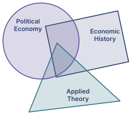

Desiree A. Desierto
Assistant Professor of Political Economy
Hamilton School for Classical and Civic Education, University of Florida
I am an economist and political scientist whose research spans political economy, economic history, and applied theory. Using formal game-theoretic models alongside historical data and econometric analysis, I study institutional change, corruption and rent-seeking, legal institutions, religion, and political development.
My work has been published in Economic Theory, the Journal of Development Economics, the Journal of Economic History, the Journal of Comparative Economics, and the European Economic Review. I am co-editor of the Economics, Religion, and Governance book series and the Journal of Economics, Management and Religion, published by World Scientific.

Research
Working Papers
- Salt Wars (with Patrick Fitzsimmons and Mark Koyama)
- Rents and Reformation (with Mark Koyama and Marcus Shera)
- Magna Carta (with Jacob Hall and Mark Koyama)
- Uncertainties in Models and Empirics
Book Project
Noble Bargain: The Political Economy of Feudal Rule (with Mark Koyama), under contract with Cambridge University Press, examines the historical and institutional foundations of liberalism and pluralism in premodern England. We apply a theoretical framework based on coalitional bargaining to study how the forging and dissolution of ruling alliances among feudal elites shaped state consolidation in medieval Europe. Parallel papers analyze Magna Carta, the English Reformation, the origins of political parties, and early modern state-building.
Publications in Refereed Journals
- Castles (with Mark Koyama)
- The Political Power of Civil Society (with Mark Koyama)
- A Model of Theft and Bribery
- Feudal Political Economy (with Mark Koyama)
- Religious Violence and Coalition Politics in History (with Mark Koyama)
- Shipwrecked by Rents (with Fernando Arteaga and Mark Koyama)
- The Political Economy of Status Competition: Sumptuary Laws in Preindustrial Europe (with Mark Koyama)
- Bribe-Switching (with Jamie Bologna Pavlik)
- Corruption for Competence
- Health vs. Economy: Politically Optimal Pandemic Policy (with Mark Koyama)
- Formal Models of the Political Resource Curse
- What Resource Curse? The Null Effect of Remittances on Public Good Provision
- Prohibition vs. Taxation in Corrupt Environments (with John V.C. Nye)
- Investment Pricing and Social Protection: A Proposal for an ICESCR-adjusted Capital Asset Pricing Model (with Diane A. Desierto)
- 2D:4D Asymmetry and Gender Differences in Academic Performance (with John V.C. Nye, Grigory Androuschak, Garett Jones, and Maria Yudkevich)
- When Do Formal Rules and Informal Norms Converge (with John V.C. Nye)
- Is It Worth Taxing Pirated Products? The Case of Optical Media Discs in the Philippines (with Karen Annette D. Lazaro and Kevin Thomas G. Cruz)
Book Chapters
- Microfounding Religion
- Institutional Change (with Mark Koyama)
- Judicial Independence: Evidence from the Philippine Supreme Court (1970–2003)
- Stimulating Investment and Growth in the Philippines: The Need for First-Order Market Reforms (with Geoffrey Ducanes)
- Why Do Weak States Prefer Prohibition to Taxation? (with John V.C. Nye)
Work in Progress
- The Dynamics of Ideology (with Mark Koyama and Patrick Fitzsimmons)
- The Birth of Parties (with Mark Koyama)
- The Almost Inglorious Revolution of 1688–1689 (with Mark Koyama)
Contact
Hamilton School for Classical and Civic Education
University of Florida, CSE 0552
432 Newell Drive, Gainesville, FL 32611
Email: ddesierto@ufl.edu